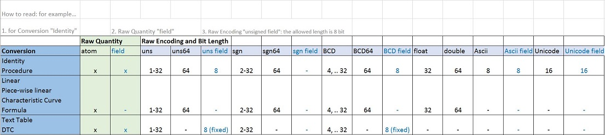
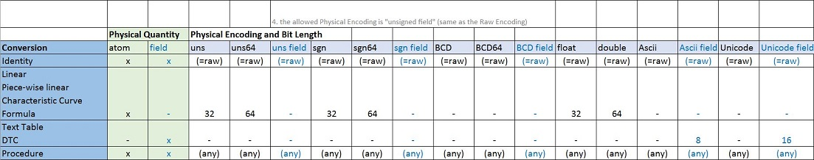
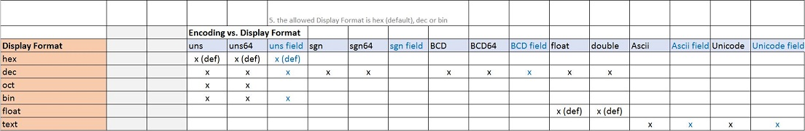

Data Type Property Dependencies
In the CANdela data model, ...
- a simple data type converts between a raw value and a physical value
- both have, among other properties, ...
- Encoding (unsigned, signed...)
- Quantity (atom/field)
- bit length
- display format
- For details see the Data Type introduction.
- These are elementary properties.
- Some combinations of their values do not make sense.
- The following lists combinations supported by the CANdela data model.
Supported Property Combinations
[DTDEP-R100] Raw Encoding and Bit Length

[DTDEP-R110] Physical Encoding and Bit Length

[DTDEP-R120] Encoding and Display Format

Legend
| (fixed) |
fixed length field only |
| (def) |
default value of the property |
| (any) |
any encoding; allowed bit lengths as for Identity - "Raw Encoding and Bit Length" |
Notes:
- 64 bit integers (for Encoding uns64, sgn64, BCD64) must be enabled in File | Properties, see [DTENC-R210].
- For fields, bit length is the length of one field (array) element.
- The CANdela data model stores constant and default values as raw values
- therefore CANdelaStudio uses the raw encoding and the raw display format for editing constant and default values..
- For convenience, the CANdelaStudio edit control for data values supports different formats:
- e.g. for a value with encoding "signed", display format decimal, it allows to edit the value also in hex format.